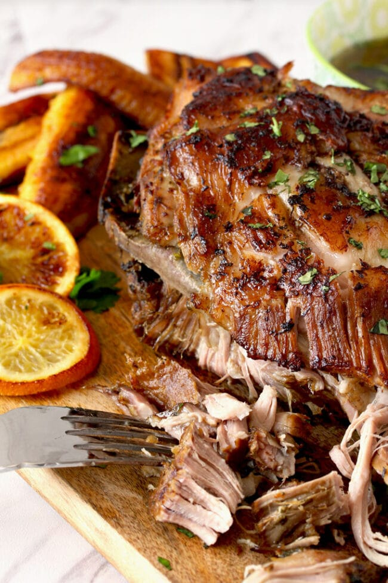

Slow Cooker Cuban Mojo Pork

Description
This Mojo Pork is marinated with the best citrus and garlic Mojo Criollo and slow cooked until fork-tender. The perfect crock pot dump-and-go Cuban pork recipe!
Ingredients
- 1 (4-pounds) pork shoulder or pork butt
- 1 1/2 teaspoons salt
- 1 teaspoon ground black pepper
- 3/4 cup orange juice, freshly squeezed
- 1/2 cup lime juice, freshly squeezed
- Zest of 1 orange
- Zest of 1 lime
- 1/2 cup olive oil
- 8 cloves garlic, chopped finely
- 2 teaspoons dried oregano
- 2 teaspoons ground cumin
- 1/4 cup chopped cilantro (lightly packed)
Instructions
- Using a paring knife, make a few slits all over the surface of the pork.
- Place the pork roast in the slow cooker and add the rest of the ingredients. Make sure the pork gets coated with the marinade.
- Cover and cook on high for 5 - 6 hours or on low for 8 or until tender.
- At this point, the pork is fully cooked and can be served with the cooking juices or you can make a quick sauce
- To crisp up the top, carefully remove the pork from the slow cooker and place it onto an aluminum foil lined baking sheet. Bake on a preheated 400 degrees F oven for about 15 to 20 minutes or until nicely browned.
- Remove from the oven and let it rest for 10 minutes before serving. You will be able to shred the meat with a couple of forks. Yes, it will be that tender!
- Serve with the remaining juices from the slow cooker or sauce.